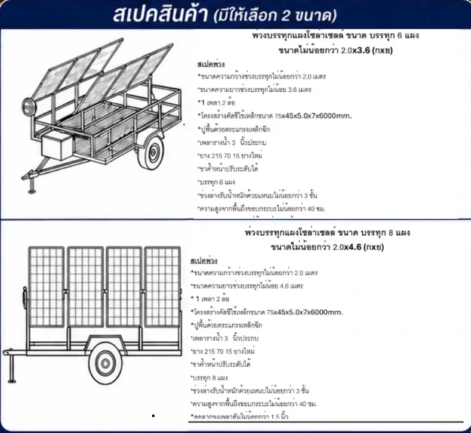

หน้าแรก /
ผลิตภัณฑ์ /
ปั๊มน้ำโซล่าเซลล์ / ปั๊มน้ำโซล่าเซลล์เคลื่อนที่
จุดเด่นของปั๊มน้ำโซล่าเซลล์เคลื่อนที่
inventory_2อุปกรณ์หลักรวมในชุดเดียว
รวมแผงโซล่าเซลล์ ปั๊มน้ำ และโครงรถเข็น ลดขั้นตอนจัดหาอุปกรณ์แยกชิ้น โดยตรวจรายการอุปกรณ์ควบคุม สาย และท่อที่รวมในชุดก่อนสั่งซื้อ เชื่อมต่อและเตรียมระบบตามคู่มือก่อนเริ่มใช้
local_shippingเคลื่อนย้ายไปใช้งานหลายพื้นที่
เหมาะกับสวนหรือแปลงเกษตรที่ต้องเปลี่ยนจุดสูบน้ำ ช่วยลดการติดตั้งชุดประจำที่หลายจุด ควรสำรวจความกว้างทาง พื้นอ่อน พื้นลาด และอุปกรณ์ที่ใช้เคลื่อนย้ายให้เหมาะกับน้ำหนักจริง
solar_powerใช้โซล่าเซลล์ลดพลังงานจากภายนอก
แผงเปลี่ยนพลังงานแสงอาทิตย์เป็นไฟฟ้าสำหรับสูบน้ำ ช่วยลดการใช้ไฟการไฟฟ้าหรือเชื้อเพลิงในช่วงใช้งาน ความประหยัดจริงขึ้นกับชั่วโมงทำงาน ความต้องการน้ำ และระบบเดิมที่นำมาเปรียบเทียบ
electrical_servicesเหมาะกับจุดสูบน้ำห่างแหล่งไฟ
พิจารณาใช้ในไร่นาและสวนที่ไม่มีไฟฟ้าเข้าถึงได้ เมื่อมีแสงและขนาดชุดเพียงพอ ไม่ต้องลากสายจากไฟหลักมายังจุดสูบสำหรับการทำงานด้วยพลังงานจากแผง
water_pumpเลือกปั๊มขนาด 1–3 นิ้ว
เลือกตามชนิดงาน เช่น รดน้ำ เติมถัง หรือส่งน้ำไปแปลงเพาะปลูก ขนาดนิ้วบอกขนาดทางน้ำ ไม่ใช่กำลังมอเตอร์หรือปริมาณน้ำตายตัว ต้องดูกราฟปั๊ม ความสูงส่ง และแนวท่อร่วมกัน
waterประยุกต์กับบ่อ สระ และแหล่งน้ำธรรมชาติ
ใช้งานได้เมื่อรุ่นปั๊มเหมาะกับแหล่งน้ำ ควรตรวจระดับน้ำ ระยะดูด ตะกอนและเศษวัสดุ พร้อมอุปกรณ์กรองหยาบตามข้อกำหนด หลีกเลี่ยงน้ำที่ไม่ตรงประเภทการใช้งานของปั๊ม
warehouseเคลื่อนกลับมาจัดเก็บได้
หลังหยุดระบบและถอดอุปกรณ์ตามคู่มือ สามารถย้ายชุดไปเก็บในพื้นที่เหมาะสม ลดการทิ้งอุปกรณ์ไว้กลางแจ้งโดยไม่จำเป็น ควรจัดเก็บสายและท่อให้เรียบร้อยก่อนเคลื่อนย้าย
verified_userมีคำแนะนำและการรับประกัน
ทีมงานช่วยประเมินขนาดชุดจากความต้องการน้ำและหน้างาน พร้อมแจ้งเงื่อนไขรับประกันตามอุปกรณ์ที่เสนอ ควรรับรายการสินค้า คู่มือ และข้อมูลการดูแลไว้ประกอบการใช้งาน
ขนาดรถเข็นและรถพ่วงสำหรับระบบสูบน้ำโซล่าเซลล์
เลือกโครงให้เหมาะกับจำนวนและขนาดแผง รวมถึงเส้นทางเคลื่อนย้าย ภาพเอกสารแสดงตัวเลือก 6 และ 8 แผง โดยเป็นข้อมูลโครงรถพ่วง ไม่ใช่ตารางสมรรถนะของปั๊มหรือการยืนยันว่าทั้งสองแบบใช้กำลัง 3060W เท่ากัน

ข้อมูลโครงรถพ่วงจากเอกสารที่ใช้ประกอบการเลือกชุด| รายการ | โครงสำหรับ 6 แผง | โครงสำหรับ 8 แผง |
|---|
| พื้นที่บรรทุก กว้าง × ยาว | ไม่น้อยกว่า 2.0 × 3.6 เมตร | ไม่น้อยกว่า 2.0 × 4.6 เมตร |
|---|
| จำนวนแผงที่โครงบรรทุก | 6 แผง | 8 แผง |
|---|
| เพลาและล้อ | 1 เพลา 2 ล้อ | 1 เพลา 2 ล้อ |
|---|
| พื้นและโครงสร้าง | พื้นตะแกรงเหล็กฉีก โครงสร้างเหล็ก | พื้นตะแกรงเหล็กฉีก โครงสร้างเหล็ก |
|---|
| ขาตั้ง | ปรับระดับได้ | ปรับระดับได้ |
|---|
| ยางที่ระบุในเอกสาร | 215/70 R15 ใหม่ | 215/70 R15 ใหม่ |
|---|
| ความสามารถรับน้ำหนักช่วงล่างตามเอกสาร | ไม่น้อยกว่า 3 ตัน | ไม่น้อยกว่า 3 ตัน |
|---|
| ความสูงพื้นถึงขอบกระบะ | ไม่น้อยกว่า 40 ซม. | ไม่น้อยกว่า 40 ซม. |
|---|
ค่ารับน้ำหนักช่วงล่างเป็นข้อกำหนดในเอกสาร ไม่ใช่น้ำหนักชุดจริงหรือการอนุญาตให้บรรทุกเพิ่มเติม ขนาดรวม น้ำหนัก และรายการอุปกรณ์ต้องยืนยันตามชุดที่สั่งซื้อ
ปั๊มน้ำโซล่าเซลล์เคลื่อนที่เหมาะกับงานประเภทใด?
agricultureสวนผลไม้และสวนทุเรียน
สูบน้ำเข้าถังพักหรือระบบให้น้ำในสวน โดยตรวจปริมาณน้ำต่อวันและความสูงส่ง หากใช้สปริงเกอร์ต้องรวมแรงดันที่หัวจ่ายต้องการ ดูแนวทาง ระบบน้ำเพื่อการเกษตร
grassไร่นาและแปลงเพาะปลูก
เหมาะกับงานเปลี่ยนจุดสูบน้ำตามฤดูกาล หรือพื้นที่ที่ไม่มีจุดจ่ายไฟใกล้แหล่งน้ำ ต้องตรวจเส้นทางย้ายชุดและเวลาที่แต่ละแปลงต้องใช้น้ำก่อนวางแผน
water_dropสวนผักและแปลงขนาดเล็ก
ใช้เติม ถังเก็บน้ำ หรือจ่ายน้ำให้ระบบรดน้ำตามความเหมาะสม เลือกปั๊มจากอัตราการไหลและแรงดันที่ต้องใช้ ไม่จำเป็นต้องเลือกชุดใหญ่ที่สุดเสมอไป
petsฟาร์มและพื้นที่เลี้ยงสัตว์
สูบน้ำเข้าถังพักสำหรับกิจกรรมภายในฟาร์ม พร้อมสำรองน้ำช่วงแดดน้อย และจัดการคุณภาพน้ำให้เหมาะกับการใช้ อ่านเพิ่ม ระบบน้ำสำหรับฟาร์ม
water_fullพื้นที่เกษตรและงานน้ำในชุมชน
เป็นทางเลือกสำหรับงานสูบน้ำที่ต้องเคลื่อนย้ายอุปกรณ์ โดยประเมินปริมาณน้ำและความต่อเนื่องก่อนนำไปใช้ใน ระบบประปาหมู่บ้านหรือชุมชน ชุดสูบน้ำไม่ได้ทำหน้าที่กรองหรือฆ่าเชื้อน้ำ
ทำไมต้องเลือกใช้รถเข็นโซล่าเซลล์สูบน้ำเคลื่อนที่?
ผู้ที่มีหลายแปลงและไม่ได้สูบน้ำทุกจุดพร้อมกัน อาจใช้ชุดเคลื่อนที่สลับพื้นที่ได้ แทนการลงทุนติดตั้งระบบถาวรทุกจุด การรวมชุดสูบน้ำบนรถเข็นช่วยจัดการอุปกรณ์และย้ายตามแหล่งน้ำได้ยืดหยุ่นขึ้น โดยต้องเผื่อเวลาจัดตำแหน่งแผง ต่อท่อ และเตรียมปั๊มทุกครั้ง
หากต้องส่งน้ำจุดเดิมทุกวัน หรือต้องการน้ำหลายพื้นที่พร้อมกัน ควรเปรียบเทียบกับ ระบบปั๊มน้ำโซล่าเซลล์แบบติดตั้งประจำที่ ด้วย เพื่อเลือกแนวทางที่ตรงการใช้งานมากกว่าดูเฉพาะความสะดวกในการย้ายชุด
ระบบสูบน้ำโซล่าเซลล์บนรถเข็นทำงานอย่างไร?
solar_powerแผงโซล่าเซลล์ผลิตไฟฟ้า
เลือกตำแหน่งรับแสงที่ไม่มีเงาบัง แผงเปลี่ยนแสงอาทิตย์เป็นไฟ DC ปริมาณไฟจริงขึ้นกับแสง อุณหภูมิ และการติดตั้ง อ่านภาพรวม โซล่าเซลล์และพลังงานแสงอาทิตย์
tuneอุปกรณ์ควบคุมให้ตรงมอเตอร์
ระบบที่ใช้มอเตอร์ AC ต้องมีอุปกรณ์ควบคุมที่รองรับ ดูหลักการของ อินเวอร์เตอร์ปั๊มน้ำโซล่าเซลล์ Sunnex โดยรุ่นและรายการที่รวมในชุดรถเข็นต้องยืนยันจากใบเสนอราคา
water_pumpปั๊มส่งน้ำตามภาระงาน
เลือกชนิดปั๊มให้ตรงแหล่งน้ำ เช่น ปั๊มหอยโข่ง สำหรับงานที่เหมาะสม หรือเปรียบเทียบ ปั๊มบาดาล สำหรับบ่อลึก ปั๊มแต่ละชนิดไม่ได้สลับใช้ได้ทุกชุด
โซล่าปั๊มจะสูบน้ำได้เมื่อพลังงานเพียงพอต่อภาระงาน เมื่อเมฆบังหรือแดดอ่อน อัตราการไหลอาจลดลงหรือระบบหยุด จึงควรวางแผนถังพักน้ำหรือแหล่งจ่ายสำรองตามชุดที่รองรับ อ่านต่อ ปั๊มน้ำโซล่าเซลล์ทำงานอย่างไร
เลือกปั๊ม 1–3 นิ้ว และเตรียมพื้นที่อย่างไร?
fact_checkเริ่มจากน้ำที่ต้องใช้และระบบท่อ
แจ้งปริมาณน้ำต่อวัน ระดับแหล่งน้ำ ความสูงส่ง ระยะและขนาดท่อ รวมถึงจำนวนหัวจ่ายที่เปิดพร้อมกัน ทีมงานจึงช่วยเลือกปั๊มและชุดพลังงานให้สัมพันธ์กันได้ ขนาด 1, 2 หรือ 3 นิ้วเพียงอย่างเดียวไม่บอกว่ารดน้ำได้กี่ไร่
routeตรวจแหล่งน้ำและเส้นทางเคลื่อนย้าย
ตรวจระดับน้ำต่ำสุด ระยะดูด และเศษวัสดุในน้ำ พร้อมขนาดทางเข้า จุดเลี้ยว พื้นดิน และตำแหน่งวางชุดให้มั่นคง อ่าน ความต่างของปั๊มบาดาลกับปั๊มหอยโข่ง เพื่อเลือกให้ตรงแหล่งน้ำ
แนวทางใช้งานและดูแลชุดสูบน้ำเคลื่อนที่
- จัดวางชุดให้มั่นคง: เลือกพื้นเหมาะสม ป้องกันรถเคลื่อน และจัดตำแหน่งแผงรับแสงตามคู่มือ ไม่ทำงานบนพื้นที่เสี่ยงลื่นหรือทรุด
- เตรียมท่อและปั๊ม: ตรวจข้อต่อ ท่อดูด และระดับน้ำ ปั๊มที่ต้องเติมน้ำก่อนเริ่มทำงานให้ดำเนินการตามคู่มือ ห้ามเดินปั๊มแห้ง
- ตรวจระบบก่อนเริ่ม: ให้ผู้มีความรู้ตรวจสายดิน อุปกรณ์ป้องกัน สายไฟ และการตั้งค่าระบบควบคุม ไม่แก้การต่อไฟเองระหว่างทำงาน
- ติดตามน้ำและสภาพแสง: สังเกตน้ำไหล เสียง และค่าการทำงาน หยุดระบบเมื่อผิดปกติ วางแผนเก็บน้ำให้พอใช้ช่วงไม่มีแดด
- หยุดและจัดเก็บก่อนย้าย: ปิดระบบตามคู่มือ เก็บสายและท่อ ล็อกชิ้นส่วนแผงให้เรียบร้อย แล้วเคลื่อนย้ายด้วยวิธีที่เหมาะสมกับชุดจริง
สอบถามราคาปั๊มน้ำโซล่าเซลล์เคลื่อนที่ 3060W
สินค้าจัดเป็นชุดตามรายการที่ตกลง พร้อมคำแนะนำเลือกปั๊มและระบบโซล่าเซลล์ ส่งภาพแหล่งน้ำ ปริมาณน้ำ ความสูงส่ง ระยะท่อ และเส้นทางเคลื่อนย้าย เพื่อประเมินชุดและรายละเอียดการจัดส่งก่อนสั่งซื้อ
คำถามที่พบบ่อยเกี่ยวกับปั๊มน้ำโซล่าเซลล์เคลื่อนที่
ปั๊มน้ำโซล่าเซลล์เคลื่อนที่ต้องใช้ไฟการไฟฟ้าหรือไม่?
สามารถออกแบบให้ใช้พลังงานจากแผงโซล่าเซลล์ในพื้นที่ไม่มีไฟการไฟฟ้าได้ เมื่อแสงและขนาดชุดเพียงพอต่อปั๊ม การใช้ไฟสำรองต้องตรวจว่าอุปกรณ์ของชุดนั้นรองรับ ไม่ควรต่อไฟเพิ่มเอง
ปั๊มน้ำโซล่าเซลล์เคลื่อนที่ 3060W สูบน้ำได้กี่ลิตรหรือใช้ได้กี่ไร่?
ยังระบุตายตัวจากตัวเลข 3060W ไม่ได้ ต้องทราบรุ่นปั๊ม ความสูงส่ง การสูญเสียในท่อ และสภาพแสง รวมถึงความต้องการน้ำของพืช ตัวเลขชุดในโบรชัวร์ไม่ใช่กำลังมอเตอร์หรืออัตราการไหล ส่งข้อมูลหน้างานให้ทีมงานประเมินก่อนเลือก
ใช้กับสวนทุเรียน สวนปาล์ม หรือนาข้าวได้ไหม?
พิจารณาใช้งานได้เมื่อปั๊มและชุดพลังงานตอบปริมาณน้ำ ระยะส่ง และความสูงที่ต้องการ หากใช้สปริงเกอร์ต้องตรวจแรงดันและจำนวนหัวที่เปิดพร้อมกัน รวมถึงช่วงเวลาที่พืชต้องใช้น้ำ
สูบน้ำจากบ่อ สระ หรือแม่น้ำได้หรือไม่?
ใช้งานได้เมื่อชนิดปั๊ม ระยะดูด และสภาพน้ำตรงข้อกำหนด ควรตรวจระดับน้ำต่ำสุด เศษวัสดุและตะกอน ป้องกันท่อดูดรั่วและการเดินปั๊มแห้ง สำหรับบ่อลึกอาจต้องใช้ปั๊มบาดาลและจัดอุปกรณ์ให้เข้ากัน
เมฆมาก แดดอ่อน หรือกลางคืนยังสูบน้ำได้ไหม?
เมื่อกำลังจากแผงลดลง ปริมาณน้ำอาจลดหรือปั๊มหยุด หากไม่มีแหล่งพลังงานอื่น ระบบที่พึ่งแสงอาทิตย์อย่างเดียวไม่สูบน้ำในเวลากลางคืน ควรสำรองน้ำในถังหรือออกแบบแหล่งจ่ายสำรองที่ชุดรองรับ
ควรเลือกปั๊ม 1 นิ้ว 2 นิ้ว หรือ 3 นิ้ว?
เลือกจากอัตราการไหล ความสูงส่ง แนวท่อและลักษณะงานร่วมกัน ไม่เลือกจากขนาดท่อเพียงอย่างเดียว ปั๊มที่มีขนาดทางน้ำเท่ากันอาจใช้กำลังมอเตอร์และให้สมรรถนะต่างกัน ต้องยืนยันรุ่นที่รวมในชุด
รถพ่วง 6 แผงกับ 8 แผงต่างกันอย่างไร?
เอกสารระบุพื้นที่บรรทุกไม่น้อยกว่า 2.0 × 3.6 เมตรสำหรับ 6 แผง และ 2.0 × 4.6 เมตรสำหรับ 8 แผง ทั้งสองแบบระบุ 1 เพลา 2 ล้อ แต่จำนวนแผงอย่างเดียวไม่ยืนยันกำลังรวมของชุด ต้องตรวจขนาดแผง น้ำหนักจริง และรายการที่เสนอขาย
เคลื่อนย้ายและติดตั้งด้วยตัวเองได้เลยไหม?
ต้องตรวจน้ำหนักชุด สภาพทาง วิธีเคลื่อนย้าย และขั้นตอนตั้งแผงตามคู่มือ ไม่ควรถือว่าใช้ได้ทุกพื้นที่ การต่อไฟและตรวจความปลอดภัยควรทำโดยผู้มีความรู้ ส่วนการรับประกันให้ตรวจตามรายการอุปกรณ์และเงื่อนไขที่กำหนด